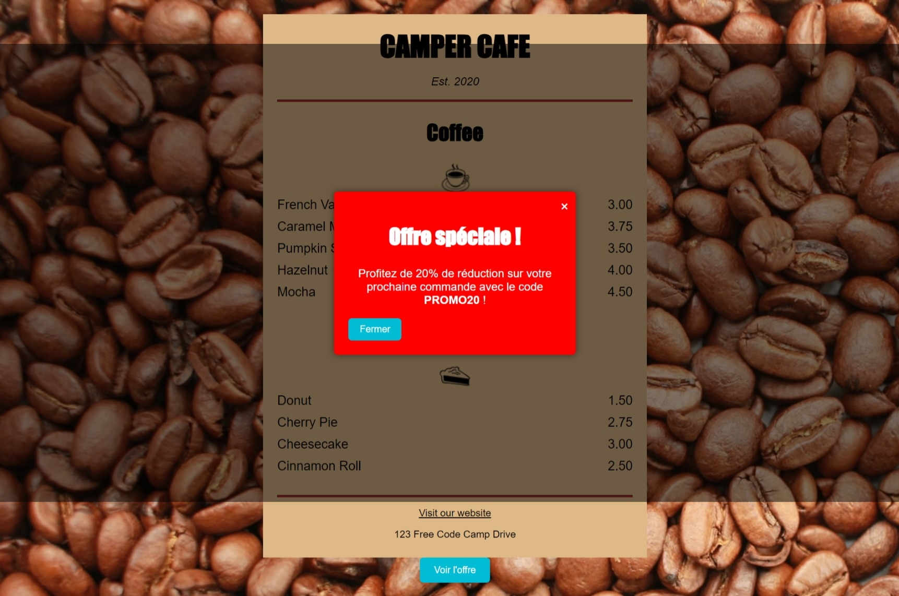

Discover my skills, creativity, and achievements in web development and digital content creation. I excel in HTML, CSS, and JavaScript to create responsive and interactive websites. I also integrate AI tools to generate high-quality visual and textual content. My portfolio features a gallery of unique creations and clear navigation to explore my projects. Always eager to learn, I aim to combine my technical skills and creativity to deliver innovative and impactful digital experiences.
I'm a passionate developer proficient in a range of modern programming languages, including HTML, CSS, Python, and JavaScript, as well as cutting-edge Artificial Intelligence (AI) tools. With extensive experience living abroad, I have a native command of the English language, enabling me to collaborate effectively in international settings and stay up-to-date with the latest technological advancements. This portfolio serves as a showcase of my skills and projects. Its primary purpose is to present my work as part of my search for a work-study opportunity (alternance). I'm looking for a dynamic and innovative company where I can apply my knowledge and continue to grow. Please feel free to reach out to discuss your projects and how I can contribute to your team.
Ce projet est une galerie de création de contenu grâce à l'IA. Vous pouvez la consulter ici: Gallery.github.
Ou Scannez le QR Code.
Ce projet est une des vidéos marketing réalisée avec different outils IA. Vous pouvez en consulter plus ici: Gallery.github.
Ou Scannez le QR Code ci-dessus.
Ce projet est un pop-up. en utilisant un exercice de freeCode Camp pour illustrer le pop-up. Vous pouvez le consulter ainsi que la page: ICI.
